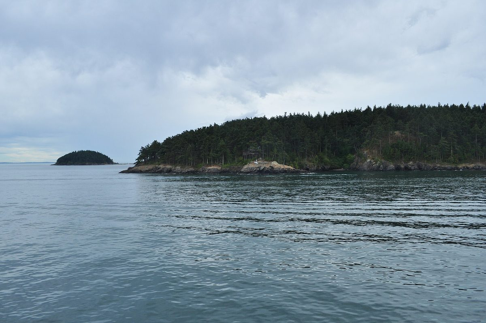

미국 워싱턴주 섬 전력협동조합 OPALCO, 디케이터섬 태양광 확장에 조합원 주민들 중단 요구

산불 위험·추가 비용·보호 녹지 변경 논란 제기…주 보조금은 부지 이전 뒤 100만 달러에서 43만 달러로 줄어, 조합 측은 질의에 상세히 답하고 소방 계획도 공개하겠다고 밝혀
미국 워싱턴주 산후안 제도의 전력협동조합 OPALCO(Orcas Power & Light Cooperative)가 디케이터섬에서 추진하는 태양광 확장 사업을 두고, 섬 주민인 조합원들이 10월 15일 조합 이사회에 나와 사업 중단을 요구했다. 주민들은 조합원에게 돌아갈 추가 비용, 소방서도 여객선도 없는 섬의 산불 위험, 사업을 위해 보호 녹지(open space) 지정을 옮기는 문제를 들었고, 조합이 변호사·컨설턴트·홍보 인력을 써 가며 자기 조합원과 다툰다고 비판했다. 발언에 나선 주민 상당수는 OPALCO의 첫 태양광 마이크로그리드에 일찍 출자한 이들로, 태양광 자체에는 찬성하지만 이번 사업을 밀고 나가는 방식에 반대한다고 밝혔다. 워싱턴주 상무부 기록상 이 사업의 주 보조금은 부지를 샌후안섬 베일러힐에서 디케이터섬으로 옮기면서 처음 100만 달러에서 43만 달러로 줄었으며, 섬에는 약 140명의 이웃이 꾸린 자율 비상대만 있다는 지적도 나왔다. OPALCO 총괄매니저는 여러 질문이 나온 것을 매우 무겁게 받아들인다며 직원들이 상세히 답해 누리집 질의응답란에 올리겠다고 했고, 조합은 사업 세부가 확정되는 대로 소방 대책 계획을 공개하겠다는 입장이다.
시민에너지 관점
첫 마이크로그리드에 먼저 출자했던 조합원들이 이번에는 반대편에 섰다는 사실은, 협동조합이라는 이름만으로 주민의 동의가 보장되지 않는다는 점을 보여 준다. 조합원 반대에 일일이 답하다 보면 사업이 늦어진다는 걱정도 있겠지만, 부지를 옮기며 보조금이 절반 넘게 줄고 법률 비용까지 쌓이는 지금의 갈등이 오히려 더 큰 비용이다. 지역 소유 에너지의 힘은 주민이 주인으로서 부지 선정과 안전 대책을 처음부터 함께 정하는 데서 나온다. 우리 마을 태양광도 주민 설명과 동의 절차를 착공 전 맨 앞에 두고, 소방·환경 대책을 미리 공개하는 것부터 원칙으로 삼아야 한다.
출처: The Journal of the San Juan Islands 2026-10-23 Darrell Kirk 원문 보기
米ワシントン州の島の電力協同組合OPALCO、ディケーター島の太陽光拡張に組合員の住民が中止要求
山火事の危険・追加費用・保護緑地の変更をめぐる問題を提起…州補助金は用地移転後に100万ドルから43万ドルに減少、組合側は質問に詳しく答え防火計画も公表する方針
米ワシントン州サンフアン諸島の電力協同組合OPALCO（Orcas Power & Light Cooperative）がディケーター島で進める太陽光拡張事業をめぐり、島の住民である組合員が10月15日の組合理事会に出席し、事業の中止を求めた。住民らは、組合員に回る追加費用、消防署もフェリーもない島での山火事の危険、事業のために保護緑地（open space）の指定を移す問題を挙げ、組合が弁護士やコンサルタント、広報要員を使って自らの組合員と争っていると批判した。発言した住民の多くはOPALCO初の太陽光マイクログリッドに早くから出資した人々で、太陽光そのものには賛成だが、今回の事業の進め方には反対だと述べた。ワシントン州商務省の記録によると、この事業への州補助金は用地をサンフアン島のベイラーヒルからディケーター島に移したことで当初の100万ドルから43万ドルに減り、島には約140人の隣人でつくる自主的な緊急隊しかないとの指摘も出た。OPALCOのゼネラルマネジャーは多くの質問が出たことを非常に重く受け止めているとして、職員が詳しく回答しウェブサイトのQ&A欄に掲載すると述べ、組合は事業の詳細が固まり次第、防火対策計画を公表する方針だ。
市民エネルギーの視点
初のマイクログリッドにいち早く出資した組合員が今回は反対側に回ったことは、協同組合という名前だけでは住民の同意が保証されないことを示している。組合員の反対に一つひとつ答えていては事業が遅れるとの懸念もあろうが、用地移転で補助金が半分以上減り、法務費用まで積み上がる今の対立こそがより大きなコストだ。地域所有エネルギーの力は、住民が持ち主として用地選定や安全対策を最初からともに決めるところから生まれる。韓国の集落の太陽光も、住民説明と同意の手続きを着工前の最初に置き、防火・環境対策を事前に公開することを原則とすべきだ。
出典: The Journal of the San Juan Islands 2026-10-23 Darrell Kirk 原文を読む
美国华盛顿州海岛电力合作社OPALCO扩建迪凯特岛光伏，社员居民要求叫停
提出山火风险、额外成本和受保护绿地变更争议…项目迁址后州补助从100万美元减至43万美元，合作社表示将详细答复并公布防火计划
围绕美国华盛顿州圣胡安群岛电力合作社OPALCO（Orcas Power & Light Cooperative）在迪凯特岛推进的光伏扩建项目，身为岛上居民的社员10月15日出席合作社理事会，要求停止该项目。居民们指出了将转嫁给社员的额外成本、既无消防站也无渡轮通航的海岛山火风险，以及为项目迁移受保护绿地（open space）指定的问题，并批评合作社动用律师、顾问和公关人员与自己的社员对抗。发言的居民中有不少人曾较早出资参与OPALCO的首个光伏微电网，他们表示支持光伏本身，但反对这次推进项目的方式。根据华盛顿州商务部的记录，该项目获得的州补助随着选址从圣胡安岛的Bailer Hill迁到迪凯特岛，由最初的100万美元减至43万美元；也有人指出，岛上只有约140名邻居自发组成的应急队。OPALCO总经理表示，对于提出的众多问题“会非常认真对待”，工作人员将详细答复并发布在官网问答栏；合作社的立场是，待项目细节确定后将公布防火措施计划。
市民能源视角
曾率先出资参与首个微电网的社员这次站到了反对一方，这说明仅凭合作社之名并不能保证居民的同意。也许有人担心逐一回应社员的反对会拖慢项目，但因迁址导致补助减少一半以上、法律费用不断累积的眼下冲突，才是更大的代价。地方所有能源的力量，来自居民作为主人从一开始就共同决定选址和安全措施。韩国的村庄光伏项目也应把向居民说明和征得同意的程序放在开工之前的最前面，并以事先公开防火和环境措施为原则。
来源: The Journal of the San Juan Islands 2026-10-23 Darrell Kirk 查看原文
Decatur Island members urge Washington's OPALCO electric co-op to halt solar expansion
Residents cite wildfire risk, added costs and a disputed open-space change; the state grant fell from $1 million to $430,000 after the site moved, and the co-op says it will answer questions in detail and publish a fire plan
Island residents who are members of OPALCO (Orcas Power & Light Cooperative), the electric cooperative serving Washington state's San Juan Islands, appeared at the co-op's Oct. 15 board meeting to demand a halt to its solar expansion project on Decatur Island. They cited additional costs to members, wildfire risk on an island with no fire department and no ferry service, and the relocation of a protected open-space designation to make way for the project, and they criticized the co-op for using lawyers, consultants and public relations staff to fight its own members. Many of the speakers were early investors in OPALCO's first solar microgrid, and they said they support solar itself but oppose the way this project is being pushed forward. According to Washington State Department of Commerce records, the state grant for the project fell from an initial $1 million to $430,000 when the site moved from Bailer Hill on San Juan Island to Decatur Island, and residents noted that the island relies on an ad hoc emergency brigade of about 140 neighbors. OPALCO's general manager said the co-op takes the many questions raised very seriously and that staff would answer them in detail in the Q&A section of its website, and the co-op says it will publish a fire mitigation plan once project details are finalized.
Citizen Energy View
That members who were among the first to invest in the co-op's original microgrid are now on the opposing side shows that the cooperative label alone does not guarantee residents' consent. Some may worry that answering every member objection slows projects down, but the current conflict, in which a site move cut the grant by more than half and legal costs keep mounting, is the far greater cost. The strength of locally owned energy comes from residents, as owners, deciding site selection and safety measures together from the start. Village solar projects in Korea, too, should make resident briefings and consent the very first step before construction and disclose fire and environmental plans in advance as a matter of principle.
Source: The Journal of the San Juan Islands 2026-10-23 Darrell Kirk Read the original